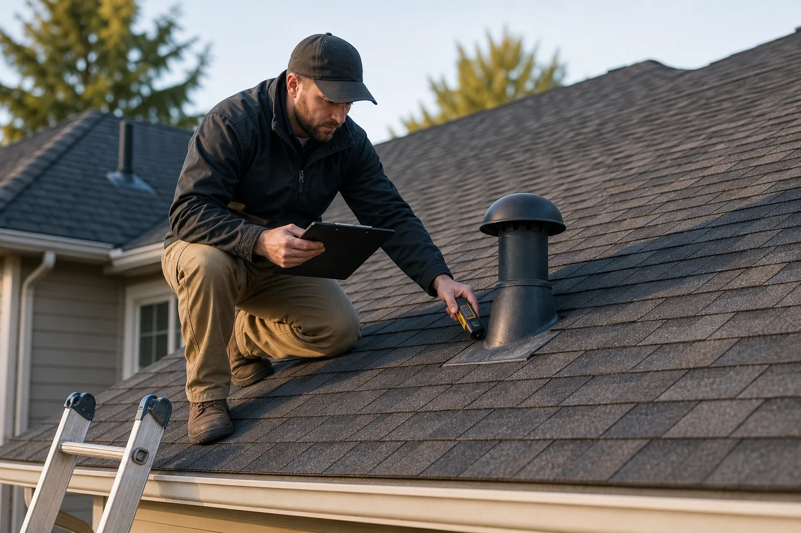

Collect the right details
Service type, location, urgency, property type, and project notes help make the first provider conversation more useful.
Roof problems rarely arrive at a convenient time. A leak after heavy rain, missing shingles after wind, overflowing gutters, or a roof that may be near the end of its life can leave homeowners unsure who to call first.
RoofLink Roofing Network was created as an aggregator for that moment. We are not the contractor performing the work. Instead, we help collect the important project details and connect homeowners with independent local service providers who may be able to respond.
The goal is simple: make the search faster, more organized, and safer by helping visitors describe the issue clearly before a provider conversation begins.

RoofLink helps users organize a roofing request and seek contact from independent providers. Provider availability, pricing, licenses, insurance, workmanship, and scheduling are handled by the provider selected by the homeowner.
Service type, location, urgency, property type, and project notes help make the first provider conversation more useful.
Repair, replacement, inspection, storm damage, gutters, and commercial roofing each require a different provider fit.
Homeowners compare responses, verify credentials, and choose whether to hire a provider. There is no obligation.
A homeowner with active water entry should not spend hours guessing which provider handles emergency repair. A property manager with a low-slope leak needs a different provider than someone comparing shingle colors. A gutter overflow may need drainage support more than a roof replacement quote.
By structuring requests around the actual roofing need, RoofLink helps visitors move from uncertainty to a more direct provider conversation.
Submit a roofing request